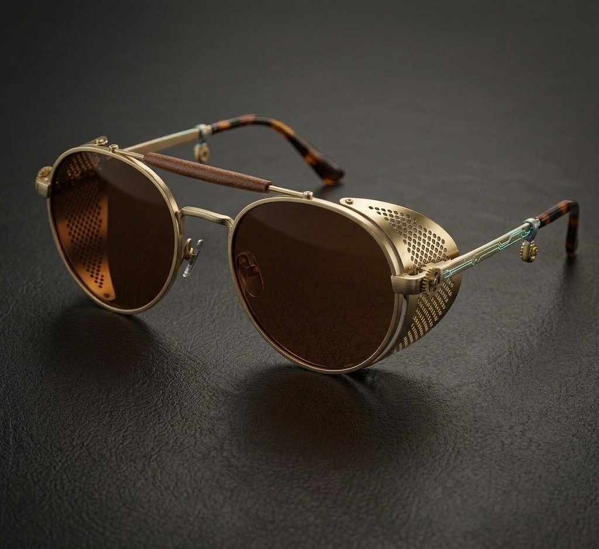
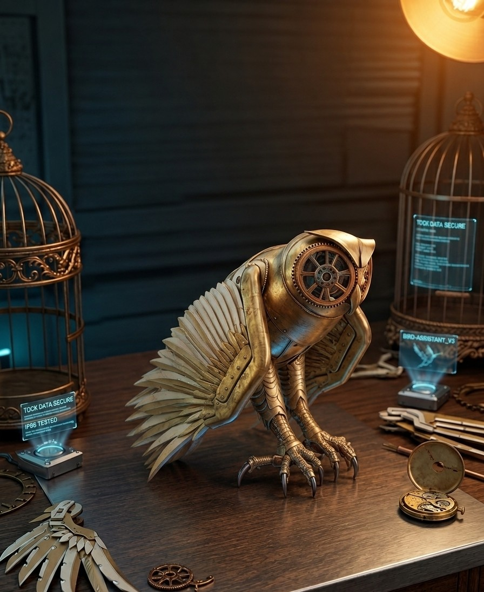

COGWORKS — EST. 2026
WHEN BRASS MEETS
LUXURY
Cheap metal, once. Precision now. Engineered heirlooms for a world that hides its gears — we don't.
Explore CollectionsOne mechanism, finer jewelry

HALO
A mechanical heirloom forged for the digital frontier.
The Cogworks HALO fuses an iconic hand-aged brass signet architecture with state-of-the-art neural telemetry. Enclosed beneath a pristine sapphire crystal dome, a microscopic kinetic gear-train dynamically rotates in tandem with your natural hand movements, trickling power directly into a 5-day hybrid reserve. Designed as a fixed-size, unyielding statement piece, HALO operates as a localized biometric anchor — completely independent of external data servers — bringing the weight of classic luxury to modern utility.
View full spec
MINJI
Absolute privacy. Uncompromised optics.
The Cogworks MINJI reimagines spatial computing through a lens of defensive architecture and absolute data sovereignty. Stripping away invasive outward-facing cameras and audio recorders, MINJI relies on an encrypted, camera-less Sandboxed Retinal Loom that anchors directly to your phone via a secure 256-bit protocol. Encased in a half-rim brushed-brass aviator framework featuring articulated clockwork gear-rivets and mechanical haptic nodes, it delivers full AR/VR immersion while keeping you completely off the grid. When the journey ends, the glasses rest inside a hand-stitched, full-grain leather sleeve that charges the 5-day battery core wirelessly via a hidden induction matrix.
View full spec
TOCK
Autonomy without exposure. Your physical shadow.
The Cogworks TOCK is a localized autonomous companion engine built to handle your physical and digital world without compromising your data perimeter. Blending the panel-layered, futuristic aerodynamics of a cyberpunk mechanical drone with the intricate, hand-polished brass aesthetics of classic horology, TOCK acts as an omnipresent personal assistant. Driven by a secure local language model, TOCK features tactical voice synthesis, a localized environment scanner, and low-tolerance articulating talons capable of object retrieval. Operating entirely within a closed sandboxed network, TOCK runs for 36 continuous hours on a single charge. When at rest, it drops onto an antique-finished copper birdcage matrix, seamlessly routing fast induction currents upward through its claws.
View full specWe believe the future should be forged, not tracked.
In an era where technology demands your identity as entry currency, Cogworks stands as an unyielding counter-weight. We do not build appliances that spy on your life, catalog your habits, or stream your intimate data to distant cloud farms. We build heirlooms. By fusing the timeless, tangible mastery of classic mechanics with the fortress-like sovereignty of sandboxed local computing, we create functional art that belongs entirely to you. No profiles. No tracking logs. No compromise.
CAMERALESS UTILITY
We intentionally strip away all outward-facing cameras and environmental video recording hardware from our ecosystems. The MINJI frames and TOCK companion operate entirely via localized passive infrared, iris arrays, and sensory nodes. You command your digital workspace without ever turning your environment into a surveillance asset.
LOCALIZED SANDBOXING
Every calculation, biometric track, and automation routine generated by the HALO ring or your companion drone is processed strictly on-device. Your hardware acts as a secure, sandboxed terminal for your personal data. We do not maintain databases, we do not sync to external servers, and we do not own your digital footprint. You do.
LUXURY HOROLOGY
A product meant to protect your legacy should outlast a digital upgrade cycle. Our chassis are crafted from hand-aged patina brass, industrial steel, and monel alloys, held together by functional clockwork gear-rivets. These are mechanical tools built with heavy hardware integrity, designed to be passed down through generations.
Forged locally. Computed independently. Established in the Lagos Tech Network Core.